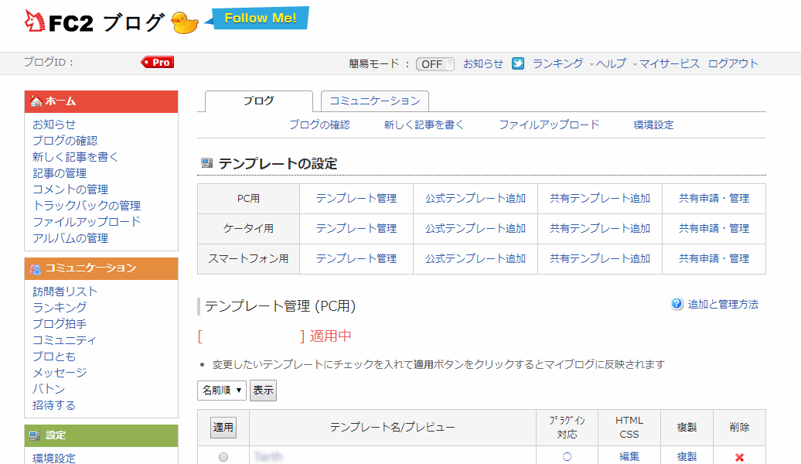
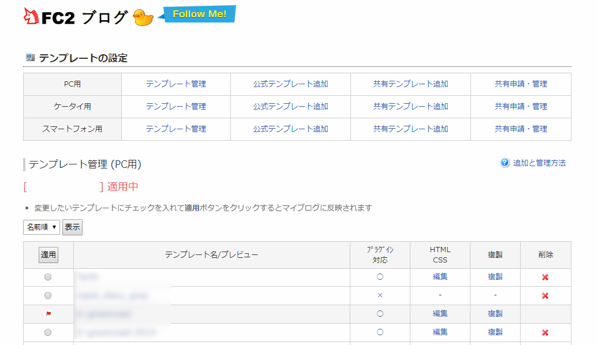

FC2ブログのテンプレート編集画面を使いやすくカスタマイズしてみる
とある案件で、FC2ブログでブログを兼ねたウェブサイトみたいなものを制作していて、それで久しぶりにFC2ブログを触ったのですが、テンプレート編集画面がどうも使いにくい…。
FC2ブログの管理画面は、自分の記憶だともう10年くらい（？）アップデートされておらず、コンテンツ全体の横幅や、文字サイズ設定も小さめに設定されており、時代錯誤な雰囲気なので、せめてテンプレート編集画面だけでもCSSで改良してみます。
関連記事：アメーバブログのテンプレート編集画面を使いやすくカスタマイズしてみる
変更点
イメージ画像


変更点
- Source Code ProをGoogle Fontsから読み込んで適用させています。不要な場合は削除してください。
- テンプレート編集中におそらく使わないであろうメニュー類は排除しました。もし必要な場合は、一度ロゴをクリックして環境設定に入ってもらうといいと思います。
- サイドバー、フッターも同様に削除・簡略化しました。
- 横幅をウインドウ幅まで広げて、フォントサイズも大きくしてあります。
CSS
今回は、Google Chromeの拡張機能を用いて、サイトにCSSを適用させます。
有名どころには、StylishやStylishなどがあります。お好きな拡張機能でCSSを適用させてください。
@font-face {
font-family: 'Source Code Pro';
font-style: normal;
font-weight: 400;
src: local('Source Code Pro'), local('SourceCodePro-Regular'), url(https://fonts.gstatic.com/s/sourcecodepro/v6/mrl8jkM18OlOQN8JLgasDy2Q8seG17bfDXYR_jUsrzg.woff2) format('woff2');
unicode-range: U+0100-024F, U+1E00-1EFF, U+20A0-20AB, U+20AD-20CF, U+2C60-2C7F, U+A720-A7FF;
}
@font-face {
font-family: 'Source Code Pro';
font-style: normal;
font-weight: 400;
src: local('Source Code Pro'), local('SourceCodePro-Regular'), url(https://fonts.gstatic.com/s/sourcecodepro/v6/mrl8jkM18OlOQN8JLgasD9V_2ngZ8dMf8fLgjYEouxg.woff2) format('woff2');
unicode-range: U+0000-00FF, U+0131, U+0152-0153, U+02C6, U+02DA, U+02DC, U+2000-206F, U+2074, U+20AC, U+2212, U+2215;
}
.header_menu, /* ログアウトのボタン類 */
#tabmenu,#sub_menu2, /* 一番上のタブメニュー */
#left, /* 左サイバドバー */
#f-service_map, /* フッター簡略化 */
#f-service_common {
display: none;
}
#header,
#container,
#f-wrap_inner{
width: 90% !important; /* 全体幅 */
}
#ajaxcontent {
float: none;
width: 100%;
}
#html_textarea_box textarea, #css_textarea_box textarea, #html_textarea_cm, #css_textarea_cm {
width: calc(100% - 24px) !important;
height: 580px !important;
font-size: 16px;
font-family: 'Source Code Pro';
}
.editbox {
font-size: 16px;
font-family: 'Source Code Pro';
}CSSの適用先は下記のURLに設定してください。
https://admin.blog.fc2.com/control.php